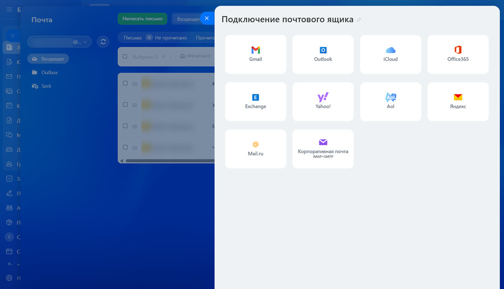
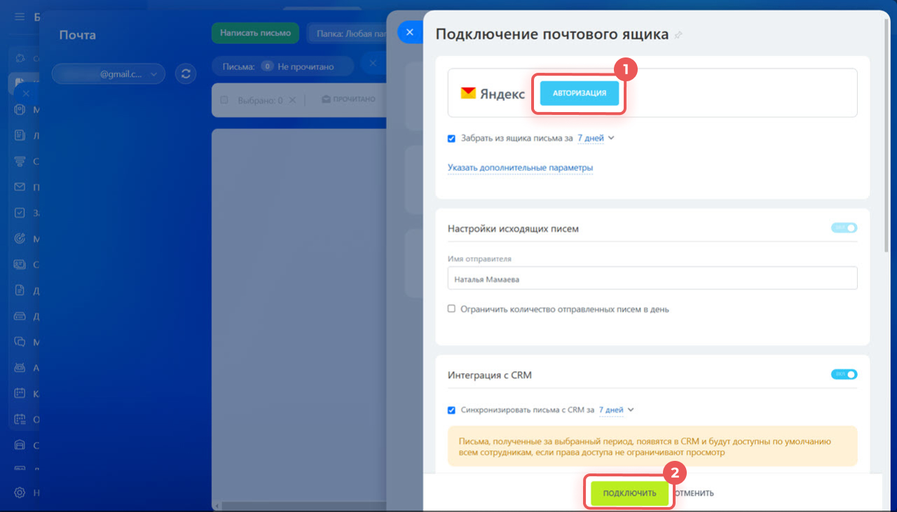
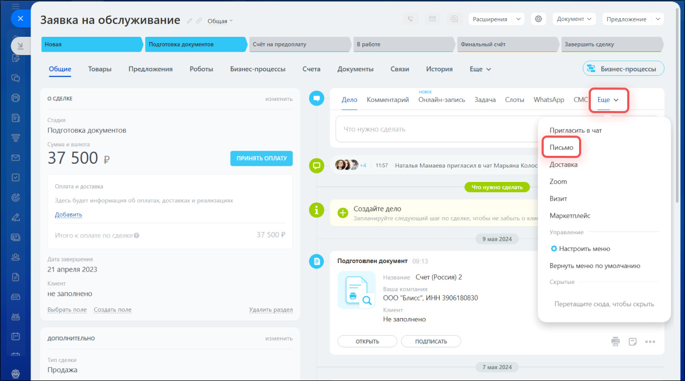
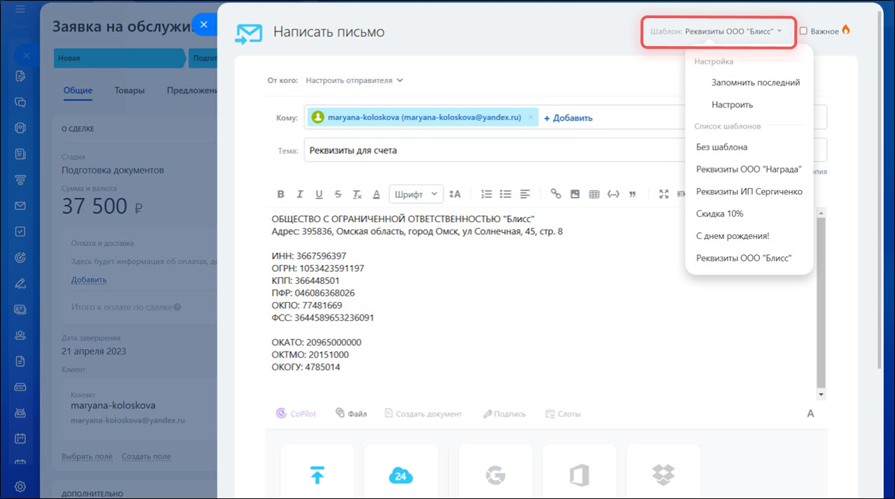
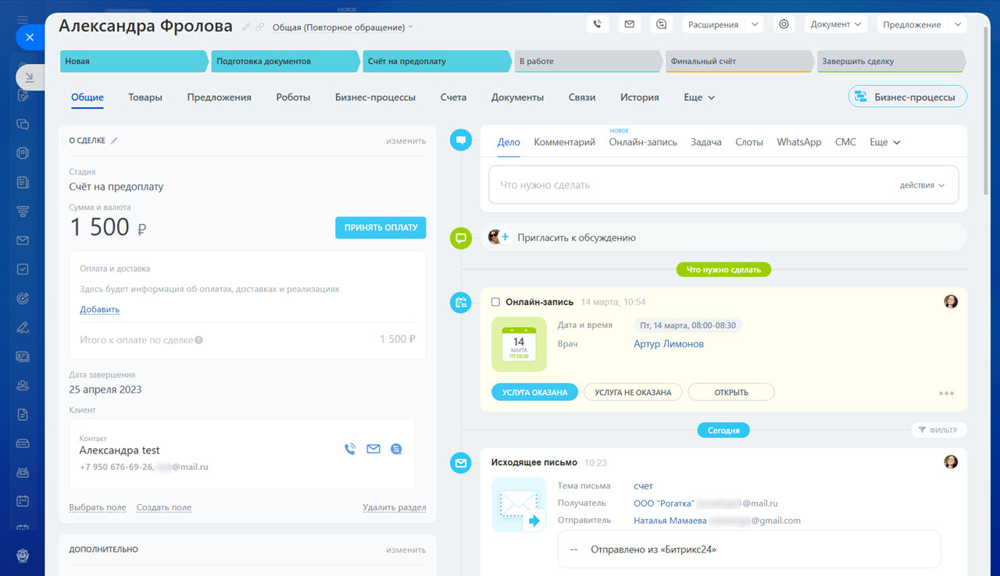

Интеграция почты и Битрикс24: как переписка с клиентами перестаёт жить в чужом почтовом ящике
Клиент написал на personal-почту менеджера — и вся эта переписка видна только ему одному. Руководитель не знает, что обсуждалось, коллега не может подхватить сделку в отпуске менеджера, а при увольнении сотрудника история общения с клиентом нередко уходит вместе с ним. Интеграция почты с Битрикс24 закрывает именно эту проблему: письма автоматически попадают в карточку клиента и остаются в компании, а не в личном ящике.
Почта — ещё один канал общения с клиентом, который можно завести в CRM
Звонки и заявки с сайта в Битрикс24 обычно уже фиксируются в сделке — это настраивается одним из первых. Почта часто остаётся в стороне: менеджер годами переписывается с клиентами из личного Gmail или корпоративного ящика, и эта переписка нигде, кроме почтового клиента, не хранится. Интеграция почты решает ту же задачу, что и для звонков: перестать держать историю общения с клиентом в инструменте, привязанном к конкретному сотруднику.
После подключения почтовый ящик остаётся тем же самым — меняется не сам ящик, а то, куда попадает переписка дальше. Входящие и исходящие письма прикрепляются к карточке контакта, лида или сделки, и любой сотрудник с доступом видит переписку целиком, а не только то, что ему перескажут.
Подключить можно и обычную почту, и свой корпоративный домен
Битрикс24 не требует заводить отдельный ящик специально под CRM. Подключается тот адрес, с которого и так ведётся переписка с клиентами.
Популярные сервисы — в пару кликов
Gmail, Outlook, iCloud, Office 365, Exchange, Yahoo!, Aol, Яндекс.Почта и Mail.ru подключаются через готовую авторизацию: нужно выбрать сервис и войти в свой аккаунт, вводить пароль в само́й Битрикс24 не обязательно.
Своя почта на корпоративном домене
Если компания использует почту на собственном домене (info@company.by) — она подключается через IMAP и SMTP: адреса серверов, порты, логин и пароль обычно один раз уточняются у своего провайдера почты или системного администратора.

Один переключатель «Интеграция с CRM» решает, куда пойдут письма
При подключении ящика Битрикс24 сразу спрашивает: синхронизировать письма с CRM или оставить почту отдельным разделом, как в обычном почтовом клиенте. От этого переключателя и зависит, увидит ли компания переписку в карточках или только сам сотрудник — в своей «Почте».
 Письмо от уже известного клиента автоматически прикрепляется к его карточке — контакту, лиду или сделке
Письмо от уже известного клиента автоматически прикрепляется к его карточке — контакту, лиду или сделке- Письмо от нового отправителя может само создать лид или сделку — правило настраивается один раз
- Можно указать ответственного по умолчанию для писем, которые не удалось привязать автоматически
- Письмо, отправленное из карточки, само прикрепляется к этой же сделке или лиду
- Можно ограничить число писем, отправляемых с ящика за день — защита от случайной массовой рассылки
- Имя отправителя в письмах клиентам задаётся один раз при подключении

Письмо можно написать прямо из сделки, не открывая почту
После подключения переписка ведётся там же, где менеджер и так работает — в карточке клиента. Не нужно переключаться в почтовый клиент и искать нужную сделку, чтобы вспомнить, о чём договаривались.
В любой сделке или лиде есть пункт «Ещё → Письмо». Открывается привычный редактор: тема, текст, вложения, копия и скрытая копия — и письмо сразу привязано к этой сделке, никуда вручную прикреплять его не нужно.

Для повторяющихся ситуаций — реквизиты, типовой ответ, поздравление — можно один раз сохранить письмо как шаблон и дальше просто выбирать его из списка, не набирая текст заново.

Переписка остаётся в истории клиента, даже если менеджер уволился
Каждое письмо — входящее и исходящее — попадает в общую хронологию сделки вместе со звонками, задачами и комментариями. Не нужно вспоминать, кто и что писал клиенту месяц назад: всё видно в одной ленте.

«Самый частый повод обратиться за интеграцией почты — не удобство, а страх. Собственник понимает, что вся переписка с ключевыми клиентами оседает в личном Gmail двух-трёх менеджеров, и если кто-то из них уйдёт, компания не восстановит историю отношений с клиентом». Команда «АйТи Аналитикс»
Общий почтовый ящик: одна почта — на весь отдел продаж
Кроме личных ящиков сотрудников, в Битрикс24 можно подключить общий ящик отдела — например, sales@company.by. Такой ящик подключает один сотрудник, а доступ к нему открывает коллегам: письма попадают в CRM и распределяются между теми, кто общается с конкретным клиентом.
- Письмо на общий ящик не «зависает» из-за отпуска или болезни одного сотрудника — его увидят и другие
- Для распределения новых обращений сотрудников можно выстроить в очередь — по порядку или по нагрузке
- У всех писем с общего ящика — единое имя отправителя, клиент видит компанию, а не конкретного человека
- Права доступа настраиваются отдельно — не каждый сотрудник с доступом к CRM обязательно видит переписку с общего ящика
Как это выглядит в жизни
Оптовая компания: клиент «потерялся» вместе с менеджером
Ключевой клиент вёл всю переписку с одним менеджером напрямую в Gmail. Когда менеджер уволился, новый сотрудник не смог поднять историю обсуждений по спецификациям и скидкам — пришлось выяснять условия у самого клиента заново, что выглядело непрофессионально. После подключения личных ящиков менеджеров с интеграцией в CRM подобная ситуация больше не повторялась: переписка осталась в карточке клиента.
Интернет-магазин: заявки с sales@ терялись между сотрудниками
Письма на общий адрес поддержки читал тот, кто первый открыл почту, — иногда обращение оставалось без ответа по два дня, потому что каждый думал, что ответит другой. Подключили общий ящик с интеграцией в CRM и очередью распределения: каждое письмо стало сделкой с ответственным, а не «письмом для всех и ни для кого».
Юридическая компания: длинная переписка по одному делу
По каждому клиенту велась долгая переписка с вложенными документами, растянутая на недели. Раньше нужную версию письма искали в почте по ключевым словам. Теперь вся переписка по делу видна прямо в сделке — вместе с задачами и звонками, в одной ленте и в хронологическом порядке.
Из чего состоит подключение почты
1. Считаем ящики и договариваемся о правилах
Смотрим, у кого из сотрудников есть личная переписка с клиентами, нужен ли общий ящик отдела и как распределять по нему письма между менеджерами.
2. Подключаем почту
Для популярных сервисов — через готовую авторизацию, для корпоративного домена — по IMAP/SMTP с данными от почтового провайдера или системного администратора.
3. Включаем интеграцию с CRM
Настраиваем, какие письма и за какой период попадают в карточки, а также правила автоматического создания лидов или сделок из писем новых отправителей.
4. Настраиваем шаблоны и права доступа
Готовим шаблоны под типовые письма и проверяем, кто из сотрудников должен видеть переписку — по умолчанию, по отделу или только по своим сделкам.
5. Проверяем связку целиком
Отправляем тестовое письмо в обе стороны и убеждаемся, что оно появилось в нужной карточке, а не потерялось между почтой и CRM.
О чём стоит знать до подключения
- Есть ограничение на размер вложений в письме — большие файлы удобнее прикреплять ссылкой на диск
- Без настроенного своего SMTP клиент первое время может видеть служебный адрес отправителя портала, хотя ответ всё равно придёт на реальный ящик
- По умолчанию письма в CRM видны всем сотрудникам с доступом к сделке — при необходимости это ограничивается правами доступа
- Интеграция почты — это про переписку с конкретными клиентами, а не про массовые email-рассылки: для рассылок в Битрикс24 есть отдельный инструмент
Почта — один из каналов общения с клиентом
Если помимо личной переписки нужны ещё и массовые почтовые рассылки — это отдельная задача с другими требованиями к доставляемости и репутации домена. А чтобы клиент мог написать не только на почту, но и в мессенджер, посмотрите статью про интеграцию мессенджеров с Битрикс24.
Хотите, чтобы переписка с клиентами не терялась?
Подключим личную и общую почту к Битрикс24, настроим интеграцию с CRM и очередь распределения писем между менеджерами.